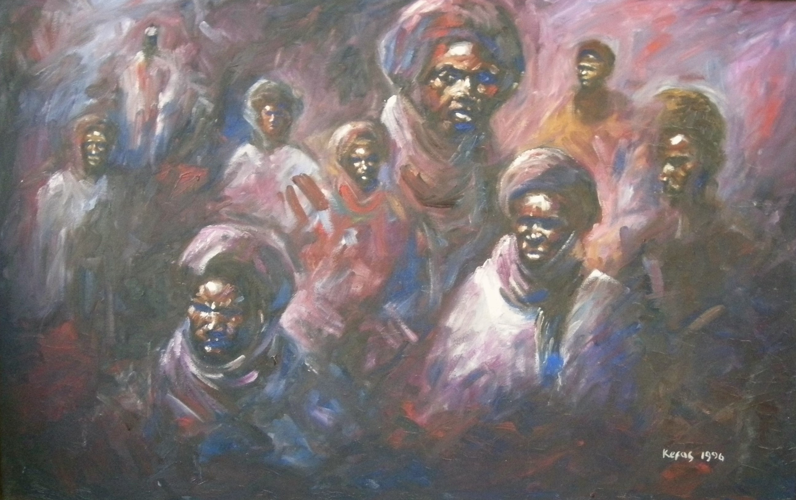

Kefas Danjuma
1958–2016
Artist Biography
Kefas Nenpunmun Danjuma was born in Vom, Plateau State, Nigeria. He attended Saint John’s College in Jos (1972–76) before pursuing higher education at Ahmadu Bello University (ABU) in Zaria, where he studied art and earned a PhD in Art History. Danjuma enjoyed a distinguished career as both a practicing painter and a respected academic and educator at ABU Zaria.
Danjuma considered human beings to be the most vital creation, centering his artistic practice on capturing the psychological and spiritual essence of the human condition, predominantly through expressive studies of faces and portraiture. He was an active member of the Nogh-Nogh art group in Zaria and a fellow of the Society of Nigerian Artists.
His work was promoted extensively by the Signature Gallery in Lagos and featured in prominent national and international exhibitions. Notable showcases include the Guinness Art Exhibition in Lagos (1994), group shows at Thought Pyramid Art Gallery in Abuja (2010, 2012), and the international touring exhibition Gani Odutokun and his Influence, which premiered at the Brunei Gallery, SOAS University of London (1999) before traveling to Brussels and the Caribbean. His work was also included in Showing Nigeria in the UK (2012), timed to coincide with the London Olympic Games.

Heads for a Durbar 1, 1996